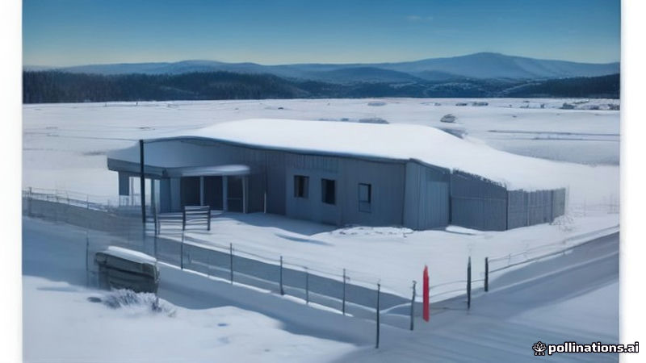

এস্তোনিয়া রাশিয়ার সব সীমান্ত পারাপার বন্ধ করবে ড্রোন কারখানার অগ্নিকাণ্ডের পর
Al Jazeera English, DW, France 24 · 2026-11-15
AI-generated illustrationএস্তোনিয়া ১ ডিসেম্বর থেকে রাশিয়ার সঙ্গে সব সীমান্ত পারাপার বন্ধ করবে, ভিমসিতে ড্রোন কারখানায় সন্দেহজনক অগ্নিকাণ্ডের পর
এস্তোনিয়া ঘোষণা করেছে যে ১ ডিসেম্বর থেকে রাশিয়ার সঙ্গে সব সীমান্ত পারাপার পয়েন্ট বন্ধ করা হবে। এই পদক্ষেপটি ভিমসিতে একটি ড্রোন কারখানা অগ্নিকাণ্ডে জ্বলে যাওয়ার সন্দেহজনক ঘটনা অনুসরণে নেওয়া হয়েছে। বিদেশ মন্ত্রী রবিবার এই সিদ্ধান্ত প্রকাশ করেন, যা অগ্নিকাণ্ডের সঙ্গে যুক্ত।
তালিন মস্কোকে হাইব্রিড যুদ্ধের অংশ হিসেবে অভিযুক্ত করেছে, বলছে আগুনটি এস্তোনিয়ার প্রতিরক্ষা সক্ষমতাকে দুর্বল করার বৃহত্তর প্রচেষ্টার অংশ। আল জাজিরা ইংলিশ, ডি ডব্লিউ এবং ফ্রান্স ২৪ এই বন্ধের খবর জানিয়েছে, যা সন্দেহজনক অগ্নিকাণ্ডকে ট্রিগার হিসেবে উল্লেখ করেছে।
সরকার বলছে সীমান্ত বন্ধটি জাতীয় নিরাপত্তা শক্তিশালী করতে এবং অভিযোগিত হামলায় প্রতিক্রিয়া জানাতে নেওয়া হয়েছে, যা আঞ্চলিক উত্তেজনা বাড়িয়ে তুলেছে।
Read the original reporting at the links above.
English version
Estonia to shut all Russia border crossings after drone factory arson
Estonia announced that it will close all of its border crossing points with Russia starting on December 1. The move follows a suspected sabotage incident in which a drone factory in Viimsi was set on fire. The foreign minister disclosed the decision on Sunday, linking it to the alleged arson.
Tallinn has accused Moscow of conducting hybrid warfare, saying the fire was part of a broader effort to undermine Estonian defence capabilities. The closure was reported by Al Jazeera English, Deutsche Welle and France 24, which all cited the suspected sabotage as the trigger.
The government says the border shutdown is intended to enhance national security and respond to the alleged attack, reinforcing Estonia’s defensive posture amid heightened regional tensions.